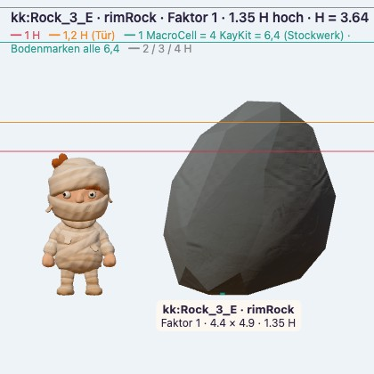
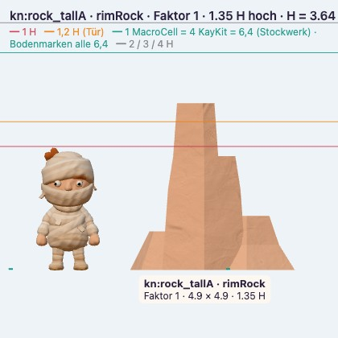
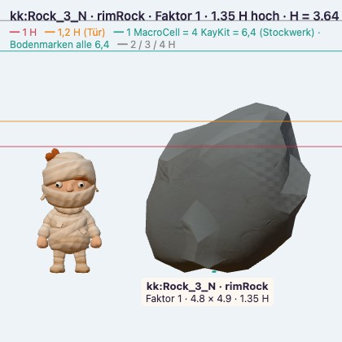
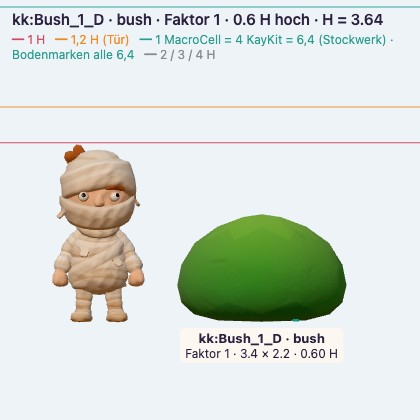
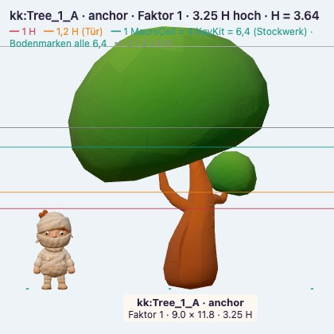
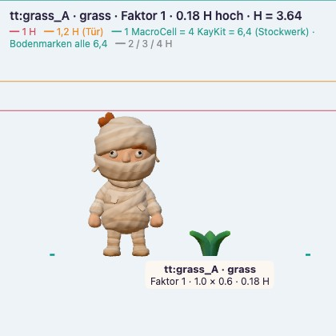

field.addEmbed), es gibt keine aufgeklebten Erdhügel. Totes Holz nur als ganzes Kit-Modell, wo die Geschichte es trägt, nie kleinteilig gebastelt.
Geschichte: Er lag schon hier, bevor etwas wuchs: vom Hügel gerollt oder aus dem Boden gewittert. Er ist schwer und liegt lange.
Lage: Steckt tief: 35–50 % unter dem Gelände. Längsachse quer zum Hang, flache Seite nach oben. Das Gelände läuft an ihm hoch, die sichtbare Form ist die Spitze eines größeren Körpers.
Gelände (field.addEmbed): kind boulder · sink 0,35–0,5 h · rise 0,1–0,2 h bergauf (Erdkeil, konkave Kehle) · falloff 0,6–1,0 r · downhill 0,7: bergauf tiefer eingebettet, bergab etwas freier
Saum nach Ursache: Bergauf im Erdkeil ein großes Grasnest (die Kehle hält Wasser und Erde), dazu ein kleines Nest in einer Kerbe. Bergab ein Fächer aus Bröckeln, die vom Fels abgeplatzt sind: 1 mittel, 3–5 klein, nach außen kleiner. Kein Ring.
Nicht: Nicht kugelig auflegen, nicht drehen, bis die Form „passt“, keine Blümchen ringsum.

Geschichte: Der Fels der Insel selbst: Regen hat das weiche Erdreich abgetragen, der harte Kern steht heraus.
Lage: Wurzelt im Inselkörper: Sockel 15–25 % im Boden. Am Fuß eine Schutthalde aus dem, was oben abbricht.
Gelände (field.addEmbed): kind outcrop · sink 0,15–0,25 h · rise 0,1–0,15 h als Schutthalde · falloff 1,0–1,5 r · downhill 0,8: Halde bergab lang ausgezogen
Saum nach Ursache: Bröckel in der Halde bergab, von groß am Fuß zu klein außen. Gras nur auf flachen Absätzen oben und bergauf am Fuß. Fraktal: eine Mesa, zwei kleinere Felsnasen, viele Brocken.
Nicht: Keine geschnittenen Kachel-Blöcke, kein flacher Sockel, der sichtbar auf dem Gras steht.

Geschichte: Wo die Insel abgebrochen ist, liegt ihr Fels frei: Der Randfels gehört zum Inselkörper, er ist nicht hingelegt.
Lage: Er sitzt in der Kante und setzt sich in die Unterseite fort. Höchstens ein kleiner Überstand; nie ein Block auf der Lippe, der herunterfallen müsste (H12). Farbe wie die Unterseite.
Gelände (field.addEmbed): kind rim · sink bis unter die Grasnarbe · Grasband rollt auf den Fels · Lab: Kante und Unterseite nehmen ihn auf (Hook am Rand)
Saum nach Ursache: Gras nur oben, wo das Grasband auf den Fels läuft. Keine Bröckel auf der Lippe.
Nicht: Keine freistehenden Brocken auf der Kante, keine Blöcke mit Schnittflächen.

Geschichte: Er ist aus dem Boden gewachsen; seine Zweige hängen bis auf die Erde.
Lage: Kein sichtbarer Fuß: Die Unterkante liegt im Boden (10–20 %), darunter ist es dunkel. Kein Anstieg, das Gelände bleibt.
Gelände (field.addEmbed): kind shrub · sink 0,1–0,2 h · rise 0 · Bodenfarbe unter der Tropfkante dunkler (Schatten, Feuchte)
Saum nach Ursache: Bodendecker auf der Sonnenseite unter der Kante, 1–2 Nester, die unter den Rand greifen. Schattenseite kahl.
Nicht: Kein Ball auf dem Boden, kein Grasring.

Geschichte: Er ist hier aufgewachsen; seine Wurzeln haben die Erde am Stamm angehoben. In der Krone wächst Fluff.
Lage: Stamm geht in einen Wurzelanlauf über: Gelände 3–6 % der Höhe angehoben, innerhalb 1,5 Stammradien, bergab etwas länger. Unter der Krone dunklerer, kahlerer Boden.
Gelände (field.addEmbed): kind tree · sink 0,03–0,05 h · rise 0,03–0,06 h · falloff 1,5 Stammradien · downhill 0,3
Saum nach Ursache: Gras dünn unter der Krone, dicht an der Tropfkante (dort kommt Licht und Regen hin). 1–2 Nester zwischen den Wurzelansätzen. Fluff-Fallobst sammelt sich bergab unter der Krone.
Nicht: Kein gebasteltes Totholz, keine kleinteiligen Äste. Totes Holz nur als ganzes Kit-Modell, wo die Geschichte es trägt.

Geschichte: Gras wächst, wo Wasser und Erde sich halten.
Lage: Folgt dem Gelände: dicht und lang in Senken, am Teichufer, im Windschatten von Fels und Busch; kurz und licht auf Kuppen; nie auf dem Weg, dicht am Wegrand.
Gelände (field.addEmbed): kein Embed · braucht unebenen Boden: Lab-Gelände mit leichtem Kleinrelief (Mulden und Kuppen) unter den Gruppen
Saum nach Ursache: Fraktal: großes Nest, zwei mittlere, viele kleine Büschel, mit Lücken dazwischen. Kurz, lang und büschelig gemischt.
Nicht: Kein gleichmäßiger Teppich, keine Einzelhalme.
Geschichte: Jemand hat es hingestellt oder liegen lassen.
Lage: Liegt auf: kleine Kontaktfläche, kurzer, dunkler Kontaktschatten, höchstens 0–3 % Abdruck.
Gelände (field.addEmbed): kind prop · sink 0–0,03 h · rise 0
Saum nach Ursache: Kein Gras darüber; Spuren erzählen, wer es gebracht hat (Weg, Platz).
Nicht: Nicht eingraben, als sei es gewachsen.
Geschichte: Fluff wächst als bunte Kugel an Bäumen und Sträuchern. Die Farmen ernten ihn (Rohstoff, passt zur Fluff-Masse der Zellen-Grammatik). Reife Kugeln fallen als Fallobst, springen und rollen.
Lage: Am Baum: in der Krone, an der Lichtseite, 3–6 je Anker, 1–2 je Strauch. Am Boden: fällt, springt 2–3 Mal, rollt bergab und bleibt in Mulden oder an Hindernissen liegen. Aufsammeln durch Drüberlaufen (Spieler und NPCs).
Gelände (field.addEmbed): kein Embed · liegt auf · Farbe aus der Biom-Palette (Blüte/Akzent, s. Farb-Grammatik)
Saum nach Ursache: Fallobst sammelt sich unter der Krone bergab und in der nächsten Mulde, nicht verstreut über die Insel. Technik: einfacher Sprung-und-Roll-Integrator am Gelände, keine Physik-Engine; Ernte durch Farmen = NPC-Activities (Blender-Coworker).
Nicht: Kein Fluff ohne Herkunft: jede Kugel am Boden liegt unter oder bergab von einem Fluff-Baum.